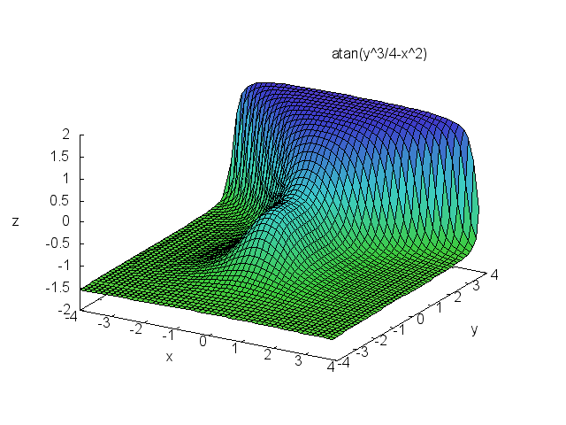

Maxima Source Code Blocks in Org Mode
Table of Contents
Org Mode support for Maxima

Introduction
Maxima is a computer algebra system descended from Macsyma, which was originally released in 1982. It is released under the terms of the GNU General Public License.
Maxima is written in Common Lisp. It can be accessed and extended in Lisp.
Requirements and Setup
Maxima binaries are available for Windows and Linux. These either require a compatible Common Lisp or an executable Lisp image. Mac OS X users can install via brew or MacPorts. The combinations of operating system and Lisp implementation known to run Maxima can be found on the Maxima ports page.
There are several versions of Maxima, some with different names. The
variable org-babel-maxima-command can be set to the name of your
Maxima executable. The default value is “maxima”.
Maxima ships with Emacs modes. Instructions for configuring them
can be found on emacswiki. imaxima is an Emacs front end with
image that displays fully typeset math in your Emacs window.
You must activate Maxima by adding a line to
org-babel-load-languages:
(org-babel-do-load-languages 'org-babel-load-languages '((maxima . t))) ; this line activates maxima
Org Mode Features for Maxima Source Code Blocks
Header Arguments
There are no Maxima-specific default header argument values.
The header argument, :cmdline, can be used to pass command line
arguments to Maxima.
Sessions
Org-mode support for Maxima does not include sessions.
Result Types
Maxima produces the full range of result types.
Examples of Use
Calculator
The following source code block uses maxima as a calculator for
powers of 12, where the powers are passed with a variable.
#+name: test-maxima #+header: :exports results #+header: :var x=1.3121254 #+begin_src maxima programmode: false; print(12^x); #+end_src
programmode: false; print(12^x);
26.06280316745402
Solver
Of course, maxima is more than a calculator.
#+name: solve-maxima #+header: :exports results #+begin_src maxima :results output programmode: false; eq: x**2-16 = 0; solution: solve(eq, x); print(solution); #+end_src
programmode: false; eq: x**2-16 = 0; solution: solve(eq, x); print(solution);
3D plots
With gnuplot installed (4.0 or higher), 3D graphics are possible.
This example is from a tutorial on the maxima/gnuplot interface.
#+name: 3d-maxima #+header: :file images/maxima-3d.png #+header: :exports results #+header: :results graphics #+begin_src maxima programmode: false; plot3d(atan(-x^2+y^3/4),[x,-4,4],[y,-4,4],[grid,50,50],[gnuplot_pm3d,true]); #+end_src
programmode: false; plot3d(atan(-x^2+y^3/4),[x,-4,4],[y,-4,4],[grid,50,50],[gnuplot_pm3d,true]);

Inline Display of Maxima LaTeX Output
Maxima code can be evaluated and displayed inline in Org mode through babel 1 as in the example below, based on RS initial example.
#+NAME: solve-maxima #+HEADER: :exports none #+BEGIN_SRC maxima :results raw tex(exp(-x)/x); #+END_SRC
tex(exp(-x)/x);
Toggle inline display of latex code
Latex code in org mode can be displayed inline by ’C-c C-x C-l’. To remove the inline display ’C-c C-c’ is used. This is described further in the manual 2.
Set scale of output
If the inline display of the equations are illegible, the scale can be set by customising the variable ’org-format-latex-options’, by setting the :scale variable to a value >1.
Noweb expansion
NOTE: I have not tested this yet, but as Eric Schulte noted on the mailing list: “Alternately, if you really want to get fancy you could use noweb expansion 5 to insert the results of the imaxima code block into a latex code block, and then use the existing latex code block functionality to convert the imaxima output to images of different types depending on the export target.”